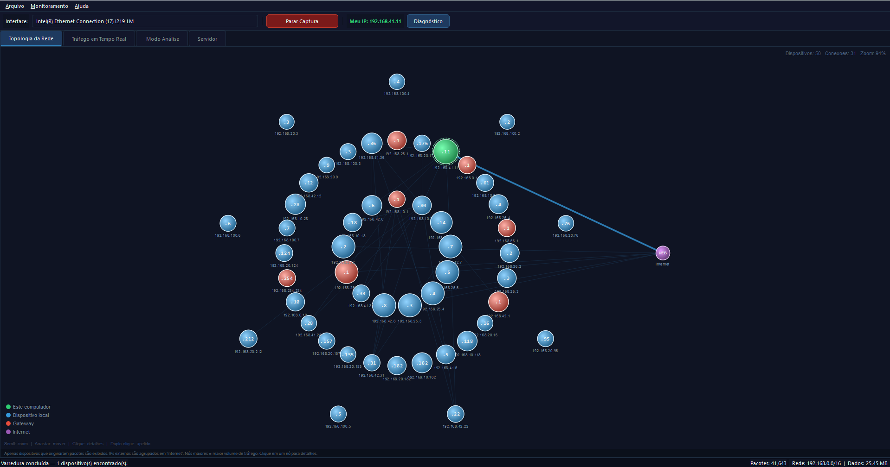

Plataforma desktop para ensino de redes e segurança web
Capture tráfego em tempo real, explore a topologia da sua rede, entenda protocolos com explicações didáticas e experimente um laboratório de vulnerabilidades web — tudo em ambiente controlado, offline e seguro.
Funcionalidades principais
Ferramentas integradas para captura, visualização e interpretação de tráfego de rede com foco educacional.
Captura em tempo real
Capture pacotes IPv4, ARP e ICMP com Scapy e Npcap em thread dedicada, sem travar a interface. Selecione a interface de rede diretamente pelo painel.
Topologia interativa
Visualize dispositivos da rede local, conexões e sub-redes em um grafo com zoom, arraste e painel de detalhes. Apelide hosts e identifique fabricantes por MAC.
Métricas de tráfego
Acompanhe KB/s em tempo real com gráfico suavizado, ranking de protocolos e dispositivos por volume. Pause e navegue pelo histórico sem interromper a captura.
Modo Análise pedagógico
Cada evento de rede ganha explicação em linguagem acessível, evidências técnicas extraídas do pacote e contexto prático. Classificação por severidade e protocolo.
Laboratório de segurança
Servidor HTTP vulnerável integrado com SQL Injection, XSS, IDOR, CSRF e mais. Banco em memória, dados descartados ao parar. Ideal para demonstrações em sala.
Diagnóstico integrado
Verifique privilégios, versão do Npcap, saúde da interface, latência do gateway e resolução DNS. Exporte relatório completo em texto.
Protocolos analisados
O NetLab classifica e explica cada protocolo encontrado na rede.
| Protocolo | Tratamento | Exemplo de evidência |
|---|---|---|
| HTTP | DPI completa | Método, host, headers, formulários, credenciais em texto claro |
| HTTPS | Metadados e contexto | IPs, portas, indicação de TLS |
| DNS | Consultas | Domínio consultado e servidor DNS |
| ARP | Descoberta local | IP/MAC de origem, operação request/reply |
| ICMP | Conectividade | Origem, destino, TTL |
| DHCP | Configuração | Portas, tipo DHCP, transaction ID |
| TCP | Conexões | SYN, FIN, RST — handshake e encerramento |
| SSH / FTP / SMB / RDP | Serviços remotos | IPs, portas, risco operacional |
Galeria do software
Explore os módulos do NetLab Educacional em funcionamento real.

Topologia interativa da rede
Mapa em grafo com até 50 dispositivos, zoom, pan e painel de detalhes por host.
O que você precisa
Requisitos de sistema e software para executar o NetLab.
Windows 10 ou 11
Sistema operacional principal. O fluxo foi projetado e testado em Windows. Alguns componentes também funcionam em Linux.
Python 3.11+
Recomendado usar a versão mais recente do Python 3. O instalador empacota as dependências necessárias.
Npcap
Driver de captura de pacotes para Windows. Instale com o modo "WinPcap API-compatible Mode" ativado.
Privilégios de administrador
A captura de pacotes requer execução como administrador. O NetLab detecta e avisa se a permissão estiver ausente.
Passo a passo rápido
Da instalação do Python até a primeira captura.
-
Instale o Npcap
Baixe e instale o Npcap em npcap.com. Durante a instalação, é obrigatório marcar a opção: "Install Npcap in WinPcap API-compatible Mode".
-
Execute o Instalador
Clique no botão Baixar o instalador no topo da página para obter o
NetLab_Educacional_v5.0.0.exe. Abra o arquivo e siga as instruções na tela para concluir a instalação no seu computador. -
Inicie como Administrador
Após a instalação, localize o atalho do NetLab Educacional na sua área de trabalho ou menu iniciar. Clique com o botão direito e selecione "Executar como administrador" para permitir a captura de pacotes.
Perguntas e respostas
As dúvidas mais comuns antes de instalar o NetLab.
subprocess,
eval
ou exec),
e usa banco de dados exclusivamente em memória — tudo é descartado ao parar. O único
risco real é expô-lo à internet, o que jamais deve ser feito.
Artigo científico
O NetLab Educacional foi documentado em artigo científico submetido ao periódico RENOTE — Revista de Ciência e Inovação (ISSN 2448-4091), abrangendo arquitetura do sistema, motor pedagógico e validação funcional no laboratório do IFFar Campus Uruguaiana.
Sobre o autor
Aviso ético importante
O NetLab Educacional foi desenvolvido exclusivamente para ensino, demonstração e pesquisa em ambientes autorizados. O servidor vulnerável implementa falhas reais por finalidade didática e jamais deve ser exposto à Internet. Não utilize as técnicas demonstradas contra sistemas reais sem permissão explícita. Capture tráfego apenas de redes próprias ou com consentimento dos participantes.
Gostou do NetLab?
O NetLab Educacional é gratuito, de código aberto e foi desenvolvido com muito estudo e dedicação. Se o projeto te ajudou em sala de aula, em um trabalho ou no aprendizado de redes, considere fazer uma doação — qualquer valor ajuda a manter o desenvolvimento ativo.